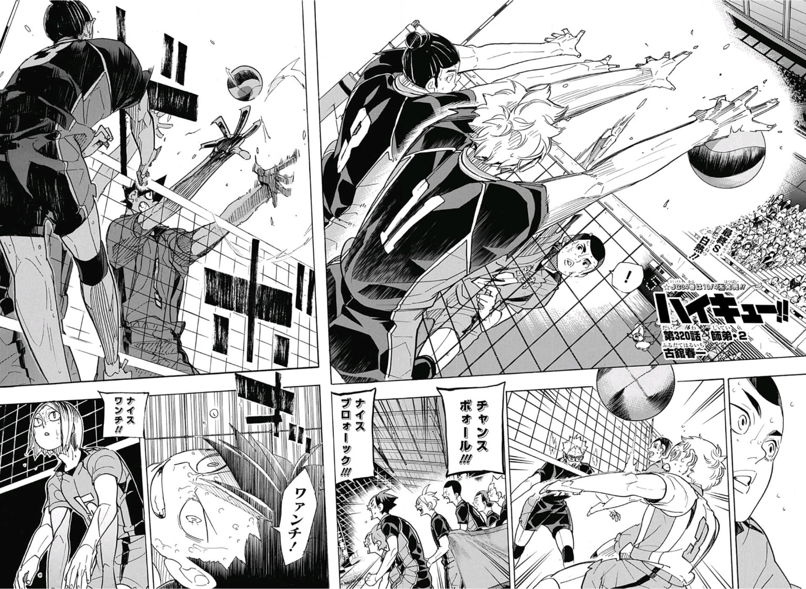

Haikyu!! (ハイキュー!! Haikyū!!, from the kanji 排球 lit. "volleyball") is a Japanese shōnen manga series written and illustrated by Haruichi Furudate. Individual chapters have been serialized in Weekly Shōnen Jump since February 2012. The series was initially published as a one-shot in Shueisha's seasonal Jump NEXT! magazine prior to serialization.
